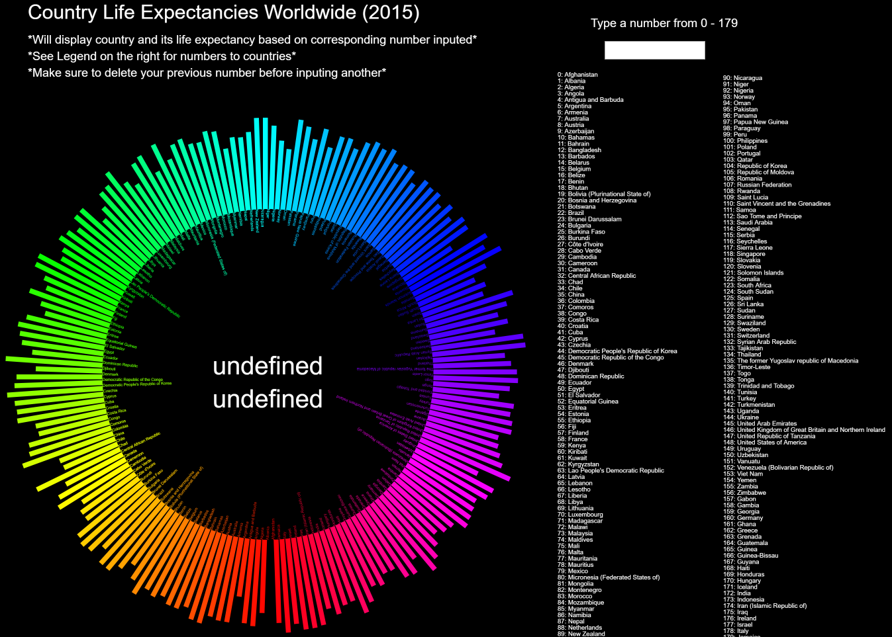

CSMA 214
CSMA 214
Professor Gottfried Haider
This was the project I was most proud of in the course. It challenged my knowledge of Html, CSS, and JavaScript in order to acheive it. It is a tool that can be used to see the life expectancies in all the countries. The Dataset was borrowed from the Global Health Observatory, kaggle.com. This website is also a proud accomplishment from that course (although it has been modified since then, the skills to do so were attained in the Intro to programming course).